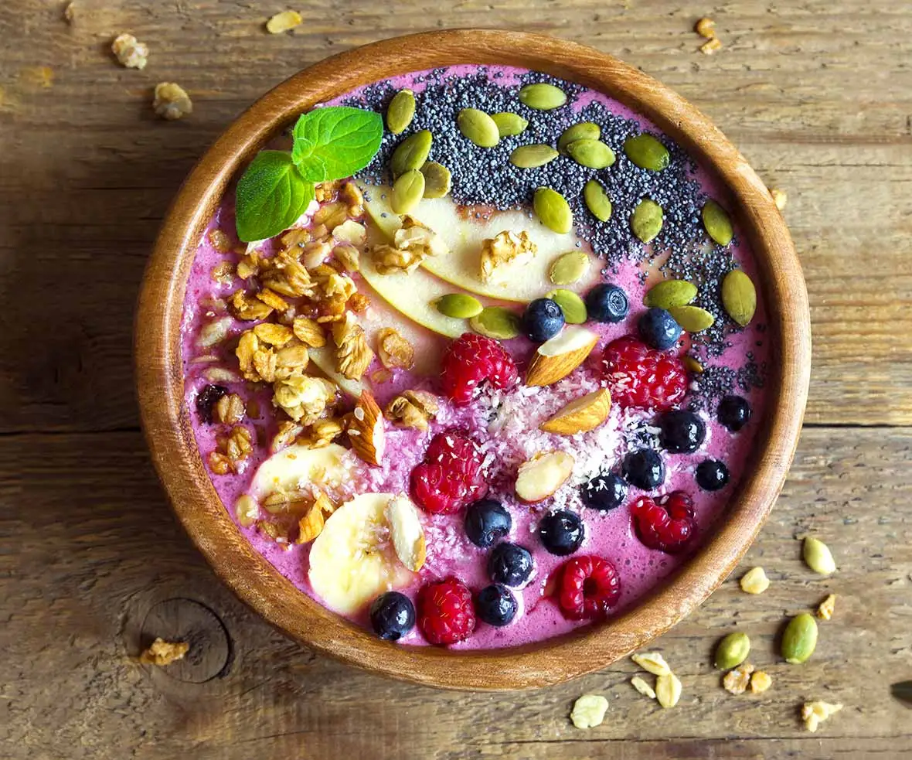

Latest Covid-19 information
At The Outlook Hotel, we strive to provide no less than extraordinary guest experiences. The wellbeing
of our guests, visitors, and the team is our main priority, so you can feel safe from check-in to
check-out, and everywhere in between. Here’s what we do based on guidelines from our local health
authorities.
SOCIAL DISTANCING – We make sure to keep a safe distance between guests and the team.
THE TEAM – is all trained in hygiene protocols that prevent the spread of infectious diseases, and make
you feel safe. They wash and sanitize hands after every encounter. Hands are dried with paper, not
towels. Every colleague is required to stay home if feeling unwell.
CLEAN SURFACES - We clean and disinfect surfaces frequently throughout the day with special attention to
high-touch areas. We are using high-level hygiene products, that still live up to the environmental
requirements and our sustainable code of conduct.
THE ROOMS – We use disinfectant detergents and make sure to pay extra attention to high-touch items
We continue to monitor the COVID-19 situation closely and follow the recommendations of our local health
authorities.
Organic breakfast now at our hotel!
A good day doesn't have to start with our Good Morning. It's Organic! breakfast - but it usually does. At
all our hotels we serve an entire buffet of healthy breakfast - and when we call it organic, we mean it
- over 90% of the breakfast is organic. You will always find freshly baked bread, breakfast cereal,
seasonal fruits, delicious juices, smoothies and much more. We could go on and on, but you'd do better
trying it for yourself.
OPENING HOURS
Weekdays: 7:00 - 10:00 / Weekends & Holidays: 7:30 - 11:00
PRICES
DKK 199,- per person. Kids under 2 years: free. Kids under 12 years: half price.

Renovations in our hotel
Dear Valued Guest,
Please be advised that our Guestrooms and Hallway areas will be under renovations starting February,
2021. I am thrilled to announce that our highly anticipated interior renovation has begun, with the
expected completion date of late August, 2021. While our hotel remains a preferred choice of many
families and business travellers alike, these renovations will allow us to provide the very best hotel
experience to our valued clients.
During the renovation period, we apologize for any inconvenience and offer our sincere thanks for your
patience and support